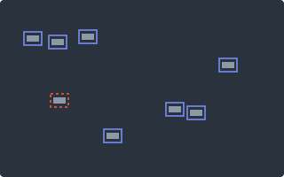

YOLOv8-SOEP
An improved YOLOv8 for small-object detection. My master’s dissertation.
- Adds Spatial Pyramid Dilated Convolution and Omnidirectional Kernel Convolution to strengthen fine-scale features.
- CSP-OmniKernel modules merge features from several directions more efficiently.
- Tested on the VisDrone car class against YOLOv8, YOLOv10 and YOLOv11. It scores highest on precision, recall, mAP50 and mAP50-95.
- Designed for real-time surveillance and autonomous systems, where small and partly hidden objects matter most.
